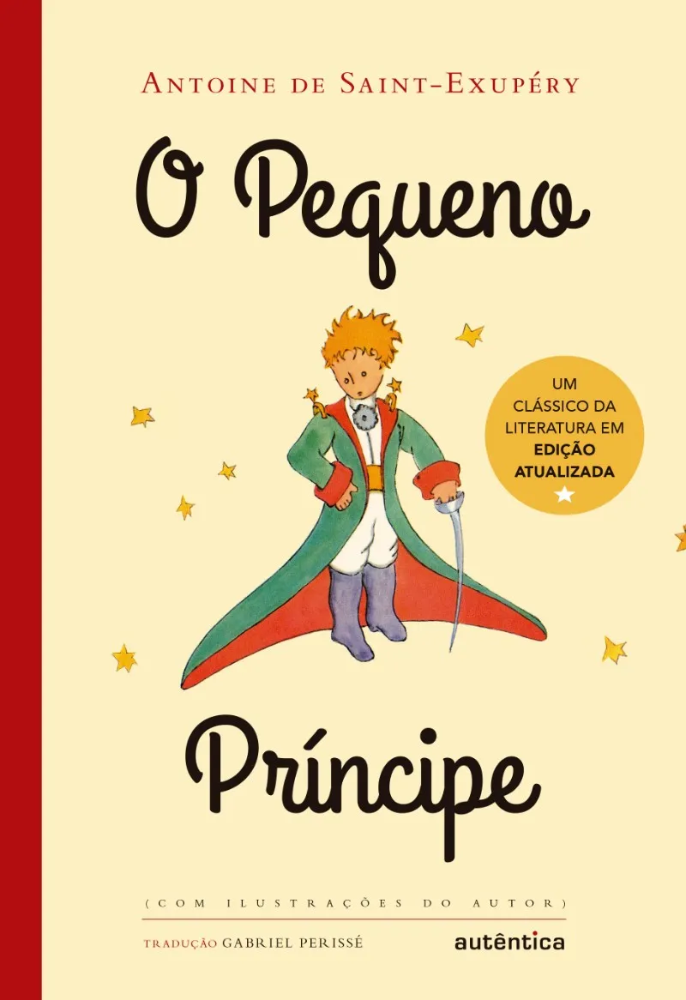

Sinopse
O pequeno príncipe é um clássico da literatura infantil que narra a amizade entre um menino e um piloto de avião. O principezinho vem do asteroide B 612, e encontra o piloto no deserto do Saara. A obra fala de amor, amizade e sobre a sabedoria infantil.
Um Livro por: Antoine de Saint-Exupéry.